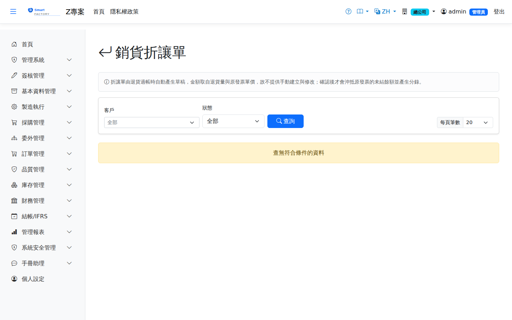

銷貨折讓單Sales Credit Note
出貨已開立應收發票、客戶已（部分）付款之後才發生銷退時，系統不會去改那張已結清的發票，而是自動產生一張折讓單草稿。確認後沖抵原發票的未結餘額並產生反向分錄。When a sales return happens after the AR invoice has been issued and the customer has already paid in full or in part, the system does not amend the settled invoice. It drafts a credit note instead; confirming it offsets the original invoice balance and posts the reversing journal entry.

查詢Search
確認與作廢Confirm and void
單據狀態Status
| 狀態Status | 說明Guide |
|---|---|
| 草稿Draft | 退貨過帳時自動產生，尚未沖抵任何金額，也還沒有分錄。Created automatically when the return is posted; nothing has been offset yet and no journal entry exists. |
| 已過帳Posted | 已沖抵原發票未結餘額並產生分錄。The original invoice balance has been offset and the journal entry posted. |
| 已作廢Void | 已撤銷；若曾過帳則分錄已回沖。Reversed; if it had been posted, the journal entry has been reversed too. |
列印Printing
清單每列的 按鈕（需有列印權限）在新分頁開啟含 QR Code 的列印單，可直接列印或另存 PDF。折讓單列印含客戶名稱、幣別與匯率，以及各行原發票與項次、品號、品名、數量、單價、金額與稅額，並印稅額、總額與本幣金額。The button on each row of the list (print permission required) opens a printout with a QR code in a new tab, ready to print or save as PDF. The credit note printout shows the customer name, currency and exchange rate, and for each line the original invoice and line, product code and name, quantity, unit price, amount and tax, with tax, total and local amount.
欄位說明Field reference
表頭Header
| 欄位Field | 說明Guide |
|---|---|
| 折讓單號Note No. | 系統採番，不可修改Numbered by the system; not editable |
| 客戶Customer | 取自來源退貨單Taken from the source return document |
| 折讓日期Note date | ＝退貨日，決定分錄落在哪個會計期間The return date; it decides which accounting period the journal entry falls into |
| 狀態Status | 草稿／已過帳／已作廢Draft / posted / void |
| 來源單號Source doc | 產生這張折讓單的退貨單號The return document that produced this note |
| 總金額／稅額／本幣金額Total / tax / local amount | 各明細合計；本幣金額為分錄採用的金額Sums of the lines; the local amount is what the journal entry uses |
明細Lines
| 欄位Field | 說明Guide |
|---|---|
| 序號Seq | 明細行序Line seq |
| 來源發票／行號Source invoice / line | 被折讓的那一張發票與那一行。以**行號**對應而非品號——同品號多行時品號比對會固定命中第一行，量價因此錯位The invoice and the line being credited. Matching is by line number, not item code: with the same item on several lines, matching by item would always hit the first one and misalign quantity and price |
| 品號Item | 退回的料件The item returned |
| 數量 / 單價Qty / Unit price | 退回數量與**原發票**的未稅單價——不是退貨單上的單價，折讓沖的是當初開出去的那筆金額The returned quantity and the unit price on the original invoice — not the price on the return document, because the note offsets the amount that was originally invoiced |
| 金額 / 稅額Amount / Tax | 數量 × 單價，以及依原發票稅率計算的稅額Quantity × unit price, and the tax at the original invoice's rate |
相關畫面Related screens
應收帳款AR Invoice、銷貨退回單Sales Return、收款作業AR Receipt